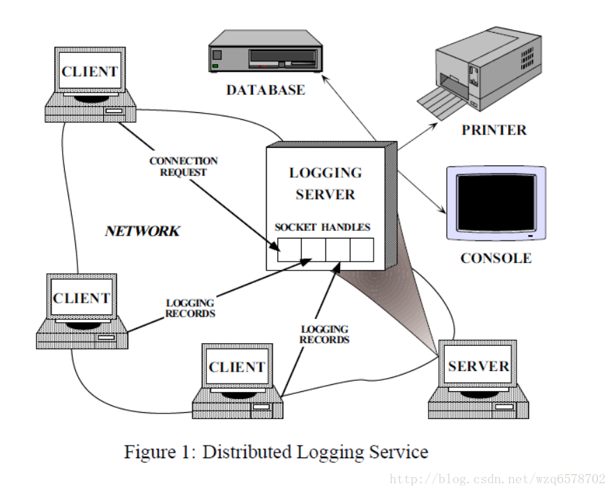
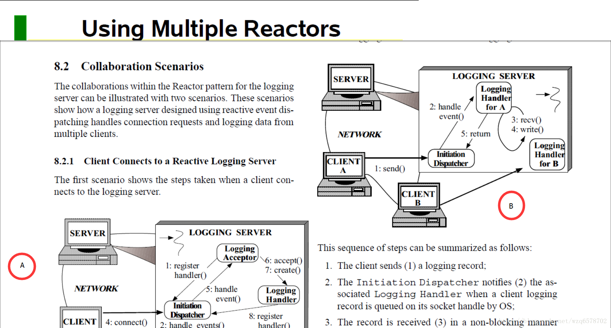

netty源码分析(七)Acceptor与Dispatcher角色分析
理解Reactor模式的另外一篇文章是一篇论文：《reactor-siemens》，论文的环境是日志服务器的例子：

客户端将日志发送到日志服务器，日志服务器将日志通过各种设备输出。
意图：
The Reactor design pattern handles service requests that are
delivered concurrently to an application by one or more
clients. Each service in an application may consist of
serveral methods and is represented by a separate event handler
that is responsible for dispatching service-specific requests.
Dispatching of event handlers is performed by an initiation
dispatcher, which manages the registered event handlers.
Demultiplexing of service requests is performed by a
synchronous event demultiplexer.
Reactor 设计模式是为了处理由一个或多个客户端向一个应用发送的请求，应用中的每个服务有单独的时间处理器组成，事件处理器的作用是特定服务的请求进行分发，时间处理器的分发是由initiation dispatcher来进行，initiation dispatcher会管理诸多的事件处理器，服务请求的分离是由同步的事件分离器处理。
我们拿出来论文的核心知识点说一下：

图A是初始化的过程：
- The logging server (1) registers the Logging Acceptor with the Initiation Dispatcher to handle connection requests;
日志服务通过初始化分发器注册到日志Acceptor 上去，用来处理连接请求。 - The logging server invokes the handle events method (2) of the Initiation Dispatcher;
日志服务器调用初始化分发器的处理事件方法。 - The Initiation Dispatcher invokes the synchronous event demultiplexing select (3) operation to wait for connection requests or logging data to arrive;
初始化分发器通用同步的事件分离方法（select()）来等待连接请求或者数据的到达。 - A client connects (4) to the logging server;
一个客户端连接到服务 - The Logging Acceptor is notified by the Initiation Dispatcher (5) of the new connection request;
当一个连接请求过来时，日志接收器被初始化分发器唤醒。 - The Logging Acceptor accepts (6) the new connection;
日志接收器接受新的连接 。 - The Logging Acceptor creates (7) a Logging Handler to service the new client;
日志接收器创建一个日志处理器来服务新的客户端。 - Logging Handler registers (8) its socket handle with the Initiation Dispatcher and instructs the dispatcher to notify it when the socket becomes “ready for reading.”
日志处理器通过初始化分发器注册到处理他的socket 上去，并且指示分发器当socket 变成准备好的时候提醒他。
图B是后续其他客户端连接的处理过程：
- The client sends (1) a logging record;
一个客户端发送一个日志。 - The Initiation Dispatcher notifies (2) the associated Logging Handler when a client logging record is queued on its socket handle by OS;
当一个客户端的日志进入到处理器的队列， 初始化分发器通知相关联的日志处理器。 - The record is received (3) in a non-blocking manner (steps 2 and 3 repeat until the logging record has been received completely);
日志接受通过非阻塞的方式通过重复步骤2和步骤3直到所有日志接受完毕。 - The Logging Handler processes the logging record and writes (4) it to the standard output.
日志处理器处理日志，并且写到标准输出里边。 - The Logging Handler returns (5) control to the Initiation Dispatcher’s event loop.
处理完毕返回到 Initiation Dispatcher时间循环。